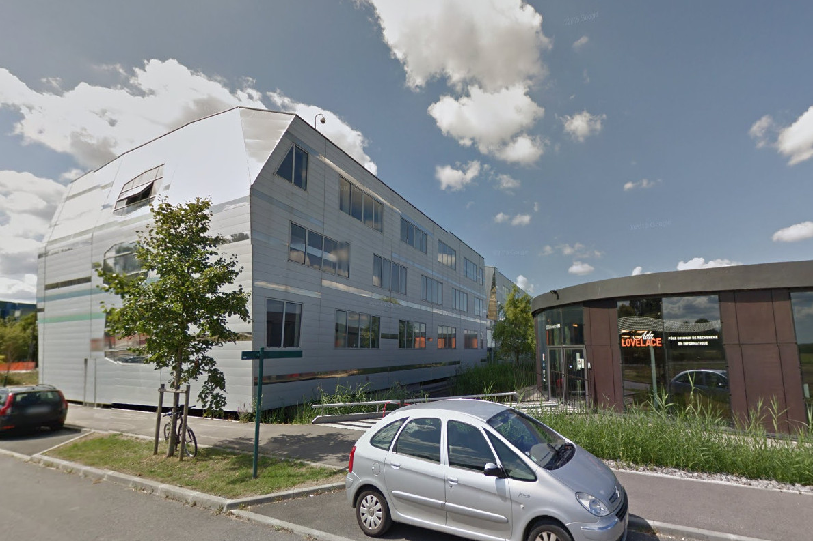
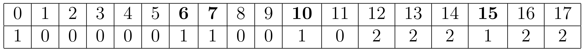
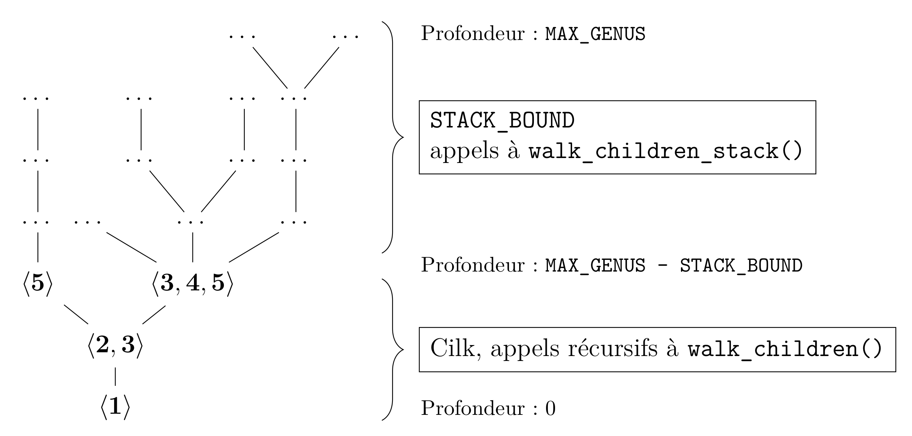
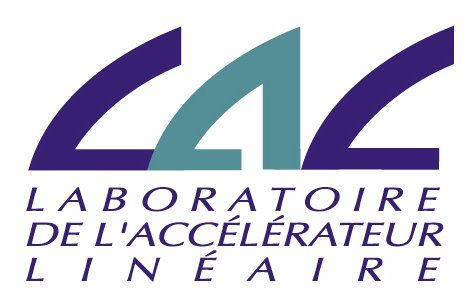

TER individuel
Distribution d'un calcul combinatoire
Edgar Fournival
Partie I
Contexte
LRI
- Laboratoire de Recherche en Informatique
- Campus d'Orsay en face de l'IUT et du PUIO
- UMR impliquant l'Université Paris-Sud et le CNRS
- Bâtiment 650 Ada Lovelace
Équipe GALaC
- Graphes, Algorithmique et Combinatoire
- Dirigé par Johanne Cohen
- Calcul algébrique, algorithmique, théorie des graphes, spécification théorique de systèmes en réseau
- Projet européen Horizon 2020 : OpenDreamKit, Sage
Mission
Distribuer un problème combinatoire
Exploration de l'arbre des semigroupes numériques
\[ S_E=\{0,3,6,7,9,10\}\cup\{x\in\mathbb{N}, x\geqslant 12\} \]Objectif : lancer le calcul à une profondeur jamais calculée auparavant
Problème : l'arbre est fortement déséquilibré
Partie II
Problème posé et solution existante
Genre = 8, soit la profondeur et aux nombres de trous

\[ S_9 = \{ 0, \mathbf{6}, \mathbf{7}, \mathbf{10}, 11 \} \cup [12; +\infty[ \]
noté
\[ \left<\mathbf{6}, \mathbf{7}, \mathbf{10}\right> \]Algorithme utilisé
DFS en premier lieu par Bras-Amorós en $O(g^2)$
Amélioré par Florent Hivert et Jean Fromentin
BFS, complexité $O(g)$
Petite constante car utilisation des instructions SIMD
Vol de tâche pour la parallélisation
Partie III
Distribution
Idée générale
Technologies utilisées
Bug GCC n°80038
#include <vector>
#include <cilk/cilk.h>
void walk(std::vector v, unsigned size) {
if (v.size() < size)
for (int i=0; i<8; i++) {
std::vector<int> vnew(v);
vnew.push_back(i);
cilk_spawn walk(vnew, size);
}
}
int main(int argc, char **argv) {
std::vector<int> v{};
walk(v, 5);
}